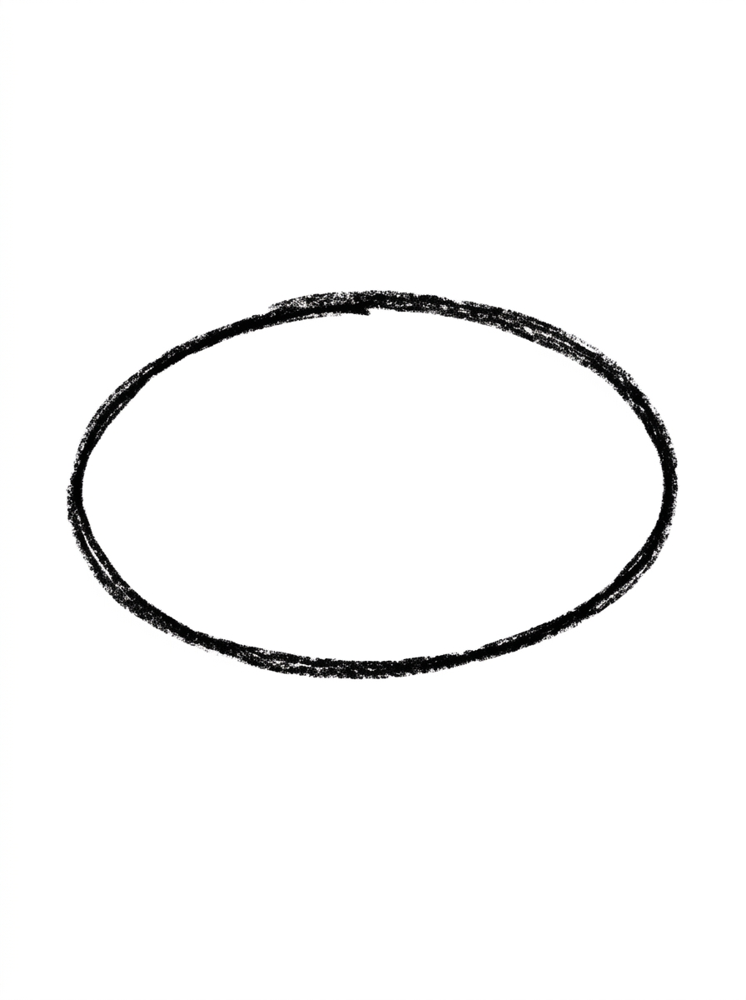
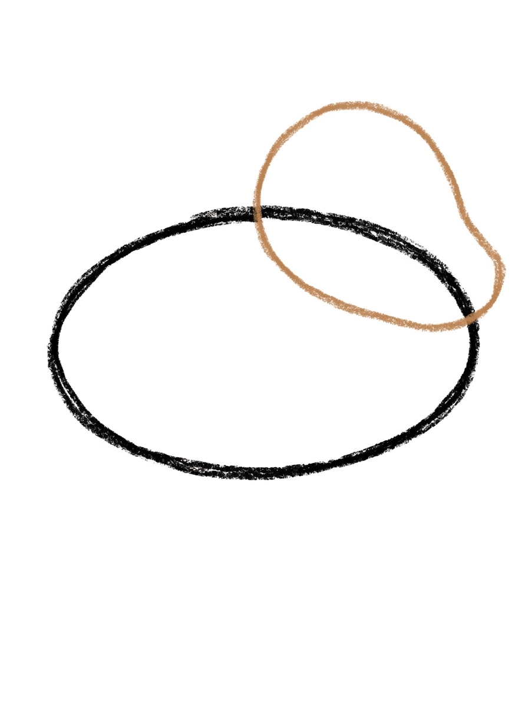
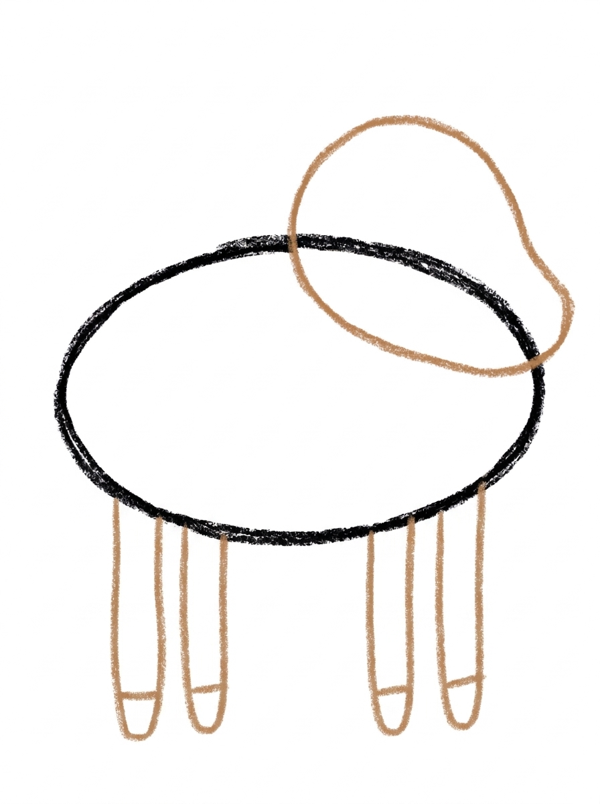
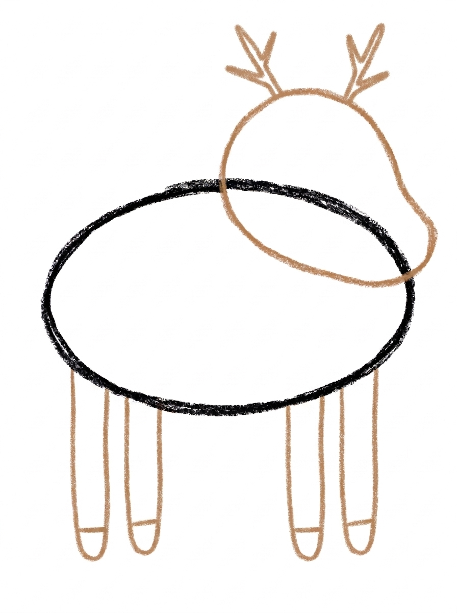
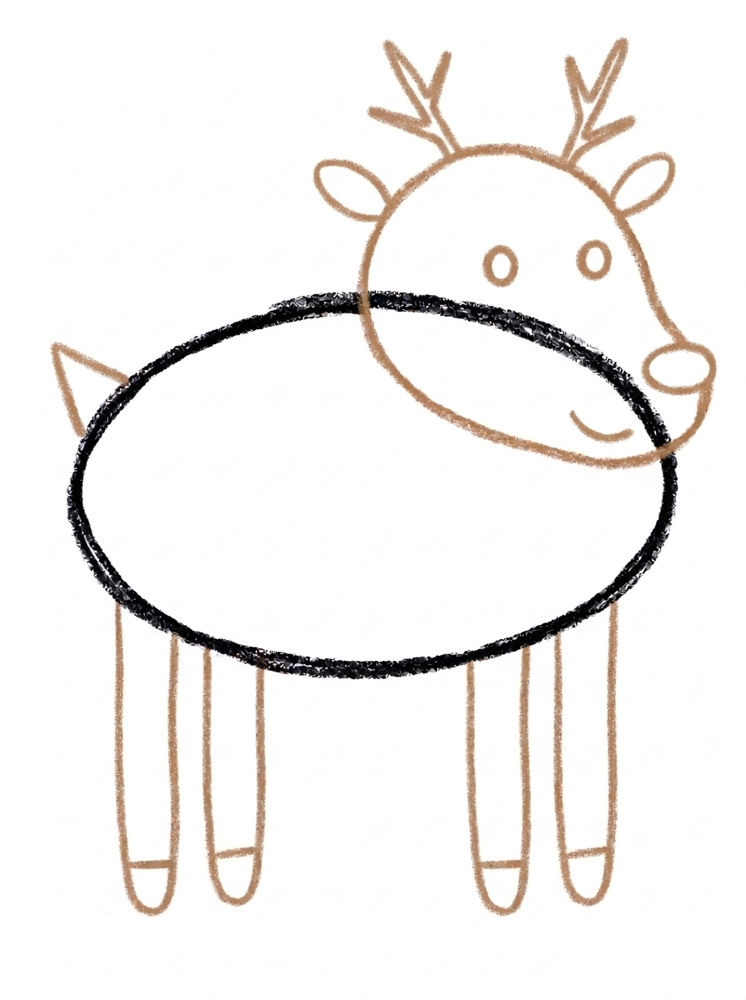
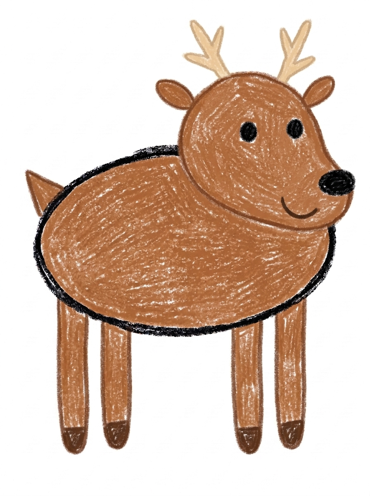

Deer Drawing for Kids How to Draw A Deer in 6 Easy Steps
Quick Answer
Draw a deer starting with one big sideways oval for the body, then one head shape — round at the top and narrowing into a soft muzzle — four legs with hoof lines, two antlers, ears, dot eyes, a nose and a tiny tail, then color. Made for ages 3 and up — no signup needed, just print and draw.
At a Glance
- Subject: How to draw a deer
- Ages: 3+
- Steps: 6 steps
- Time: ~15 min
- Difficulty: Easy
- Supplies: Paper, crayons
A gentle deer is a lovely woodland drawing, and the secret is in the head: it is drawn as one single shape — round at the top and narrowing into a soft muzzle, like a tilted egg — instead of a circle with a snout stuck on. Add branching antlers, and there is no mistaking it for anything else.
✏️ Draw Your Deer in 6 Easy Steps
One step per box — this step by step deer drawing shows each new part in a different color so kids can see exactly what changed.
Step 1: The Body

Draw one big oval lying on its side in the middle of your paper. This round shape becomes your deer's body.
Step 2: The Head

Draw the head at the front of the body, overlapping its upper front corner so the two shapes touch. Draw it as ONE shape: round at the top and narrowing toward the front into a soft muzzle, like a tilted egg. This one shape is the whole head.
Step 3: The Legs and Hooves

Draw four long thin legs hanging straight down from the bottom of the body — two near the front and two near the back. Add one short line near the bottom of each leg for the hoof.
Step 4: The Antlers

Draw two antlers on top of the head. Each antler is one line going up from the head with two short lines branching off it.
Step 5: Ears, Face and Tail

Draw two small oval ears on the head, one on each side just below the antlers. Then draw two round dot eyes on the head, one on each side and one small oval nose at the front tip of the head. Last, add one small triangle tail pointing up at the back end of the body.
Step 6: Color It In

Color your deer! Warm medium brown for the body, head, legs and tail, pale tan for the antlers, dark brown for the hooves, and black for the nose and eyes. Great drawing!
📊 Deer Drawing by Age
Every age can join in — just adjust the job.
| Age | What they can do | Tip |
|---|---|---|
| 3-4 | Draw the body oval and straight legs, and add antlers as simple one-branch Y shapes with help. | Antlers can be simple at this age — one line up with one branch reads perfectly well as a deer. |
| 4-5 | Draw the one-piece head shape and both antlers with two branches each, then place the ears and face. | Remind them the head is one tilted-egg shape, not a circle plus a snout stuck on — one shape keeps the muzzle in the right place. |
| 6+ | Draw the whole deer unaided and add white spots for a fawn or a forest background around it. | Ask them to draw a smaller fawn beside it — same steps, smaller oval, spots instead of antlers. |
🖨️ Download Your Free Deer Drawing Printable
The printable lays out all 6 steps one per box, big enough for little hands — kids draw right alongside each step.
⬇️ Open Free Printable 🖨️ Print🎁 Free printable for ages 3+
🦌 Woodland Deer Scene
Build a woodland scene around your finished deer: tall triangle pine trees, grass strokes along the bottom, and falling leaves or snow depending on the season. Then try the family challenge — draw a fawn next to the deer using the same steps with a smaller body, white spots on its back, and no antlers. Counting check for little ones: four legs, two antlers, and how many branches on each antler? Older kids can label the parts of the deer right on the picture.
What You'll Need to Draw A Deer
You need paper, a pencil and crayons or markers. The finished deer is warm medium brown all over, with pale tan for the antlers, dark brown for the hooves and black for the nose and eyes. If your child wants to make a fawn instead, keep a white crayon or gel pen ready for back spots at the coloring stage.
What They're Learning
This tutorial practices a big sideways oval, four straight legs with short hoof lines, and branching lines for the antlers — the same forked stroke children will later use for trees and lightning. The head teaches a more advanced idea in a simple form: drawing one outline that changes width, round at the top and narrow at the muzzle. Placing two ears, two eyes and two antlers on matching sides builds symmetry awareness, and the small triangle tail adds a second basic shape.
Make It Yours
Turn the deer into a fawn by skipping the antlers and dotting white spots along its back, or into a Christmas reindeer with a bright red nose. A deer family is easy — repeat the steps with a smaller oval for the young one. Kids also love setting the scene: triangle pine trees, a grass line, falling snow or autumn leaves around the hooves, and a moon if their deer is out at dusk.
🛒 Our Favorite Drawing Supplies
These are the supplies we reach for in our own home — washable (because kids), quality paper, and enough colors to avoid fights.
As an Amazon Associate, MomYouNeedThis earns from qualifying purchases — at no extra cost to you.
💡 Deer Drawing Tips for Parents
Step 2 is where this deer is won or lost. The head must be one shape drawn in one go — round at the top, narrowing toward the front like a tilted egg — and it should overlap the body's upper front corner so the two touch. If your child instinctively draws a circle and then a separate snout, gently restart that step rather than patching it; the muzzle, nose and eyes all place themselves correctly once the single outline is right.
Antlers scare parents more than kids. Each one is just a line going up with two short lines branching off, exactly like drawing a tiny bare tree or the letter Y with an extra branch. Draw one slowly together, then let your child mirror it on the other side — slightly uneven antlers look natural, because real ones are never perfectly matched either.
🦌 Deer in the Real World
Deer live in forests and meadows all over the world, and the males — bucks — grow the branching antlers in this drawing. Antlers are made of bone, and here is the strange part: they fall off every winter and grow back bigger every spring. A deer can grow a whole new set of antlers in a single season.
Baby deer, called fawns, are born with white spots that help them hide in dappled sunlight while their mother feeds nearby. Deer are quiet, quick, and always listening — those big ears swivel toward every sound. Ask your child what their deer just heard in the woods.
✋ Warm-Up: Branching Lines
Antlers are just branches, so warm up with branches. Draw a line that splits into two, then split each of those again — a tiny tree, then a bigger one. Tree-branch practice is antler practice wearing a disguise, and the second or third tree always comes out better than the first.
Real antlers are never perfectly symmetrical, so a lopsided set in the drawing is nature-accurate. The mistake that does show is a floating antler — if one misses the head, extend its first line until it lands. Deer keep their antlers attached; drawings should too.
📖 Give Your Deer a Story
Forest animals have quiet stories. Is this deer the watcher of the herd, a young buck growing his first big antlers, or the one who knows where the berries are? A dictated sentence or two under the drawing gives the deer a role in the woods — and gives your child a reason to draw the woods around it next time.
The moose tutorial is the deer's enormous northern cousin. Drawing both lets your child compare the two antlers side by side — branches versus paddles — which is the kind of noticing that makes young artists proud of their eyes.
❓ Deer Drawing FAQs
What is the easiest way to draw a deer?
Start with one big sideways oval for the body, then draw the head as a single shape — round at the top, narrowing into a soft muzzle, like a tilted egg — at the front of the body. Add legs, branching antlers, ears, dot eyes and a nose, following the six steps.
What age is this deer drawing for?
It is made for ages 3 and up. Younger kids can handle the body, legs and simple antlers with help on the head shape, while older kids can complete all six steps and add spots or scenery.
What supplies do we need?
Paper and a pencil for drawing, plus crayons or markers for coloring: warm medium brown, pale tan, dark brown and black cover the whole deer. A brown paper or a forest picture nearby sets the woodland mood nicely.
Is the printable really free?
Yes — every printable on MomYouNeedThis is 100% free to download and print. No signup, no payment, just tap the download button.
How do I print it?
Open the free PDF and print it at 100% scale, not 'fit to page', so the step pictures come out at the size they were designed. One page is the whole tutorial, and you can print fresh copies whenever your child wants another try.
Why is the head drawn as one shape instead of a circle and a snout?
Because a separate circle-plus-snout tends to float, slide out of place or look pasted on. Drawing the head as one outline — round at the top and narrowing to the muzzle — keeps the whole face in proportion, which is why this tutorial builds it that way in Step 2.
Do all deer have antlers?
Mostly the males, called bucks, grow antlers; females, called does, usually do not. So if your child skips the antlers and adds spots, they have drawn a doe or a fawn — and they are zoologically correct.
How can my child turn this deer into a reindeer?
Give it a big red nose at the tip of the muzzle — plus a few drawn jingle bells or a snowy background — and the same deer becomes a reindeer. The steps do not change at all; only the coloring does.
📚 Keep Exploring
- ✏️ All 76 Drawing Tutorials 76 free step-by-step drawing tutorials for kids.
- 🐾 Animal Coloring Free printable animal coloring pages for little learners.
- ✏️ Drawing Practice Free printable drawing pre-writing worksheet for toddlers.